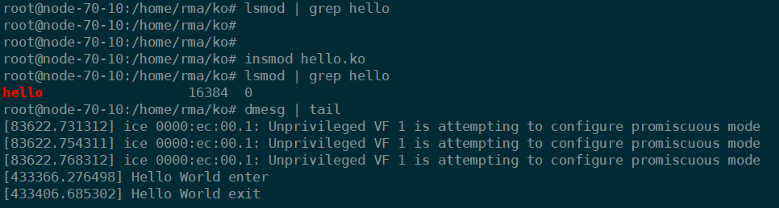

加载内核简介
Linux内核的整体架构本就非常庞大，其包含的组件也非常多。而我们怎样把需要的部分都包含在内核中呢？一种方法是把所有需要的功能都编译到Linux内核中。
这会导致两个问题，一是生成的内核会很大，二是如果我们要在现有的内核中新增或删除功能，将不得不重新编译内核。
Linux提供了这样的机制，这种机制被称为模块（Module）。可使得编译出的内核本身并不需要包含所有功能，而在这些功能需要被使用的时候，其对应的代码被动态地加载到内核中。
模块本身不被编译入内核映像，从而控制了内核的大小。
模块一旦被加载，它就和内核中的其他部分完全一样。
代码示例
文件树
1 | hello.c |
整个工程只有两个文件，一个hello.c，一个用来控制编译的Makefile。
hello.c
1 |
|
代码解析
内核模块中用于输出的函数是内核空间的printk()而不是用户空间的printf()，printk()的用法和printf()基本相似，但前者可定义输出级别。printk()可作为一种最基本的内核调试手段。
一个Linux内核模块主要由如下几个部分组成。
模块加载函数
当通过insmod或modprobe命令加载内核模块时，模块的加载函数会自动被内核执行，完成本模块的相关初始化工作。
Linux内核模块加载函数一般以__init标识声明，模块加载函数以module_init（函数名）的形式被指定。它返回整型值，若初始化成功，应返回0。而在初始化失败时，应该返回错误编码。在Linux内核里，错误编码是一个接近于0的负值。模块卸载函数
当通过rmmod命令卸载某模块时，模块的卸载函数会自动被内核执行，完成与模块卸载函数相反的功能。
Linux内核模块加载函数一般以__exit标识声明，模块卸载函数在模块卸载的时候执行，而不返回任何值，且必须以module_exit（函数名）的形式来指定。模块许可证声明许可证（LICENSE）
声明描述内核模块的许可权限，如果不声明LICENSE，模块被加载时，将收到内核被污染（Kernel Tainted）的警告。在Linux内核模块领域，可接受的LICENSE包括“GPL”、“GPL v2”、“GPLand additional rights”、“Dual BSD/GPL”、“Dual MPL/GPL”和“Proprietary”（关于模块是否可以采用非GPL许可权，如“Proprietary”，这个在学术界和法律界都有争议）。大多数情况下，内核模块应遵循GPL兼容许可权。Linux内核模块最常见的是以MODULE_LICENSE（“GPL v2”）语句声明模块采用GPL v2。模块参数（可选）
模块参数是模块被加载的时候可以传递给它的值，它本身对应模块内部的全局变量。模块导出符号（可选）
内核模块可以导出的符号（symbol，对应于函数或变量），若导出，其他模块则可以使用本模块中的变量或函数。模块作者等信息声明（可选）
MODULE_AUTHOR、MODULE_DESCRIPTION、MODULE_VERSION、MODULE_DEVICE_TABLE、MODULE_ALIAS分别声明模块的作者、描述、版本、设备表和别名printk
printk的日志级别定义如下（在include/linux/kernel.h中）：1
2
3
4
5
6
7
8
Makefile
1 | KVERS = $(shell uname -r) |
编译命令
1 | make |
测试结果
